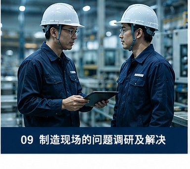
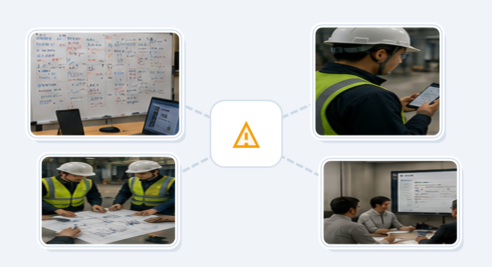
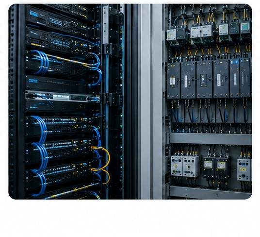
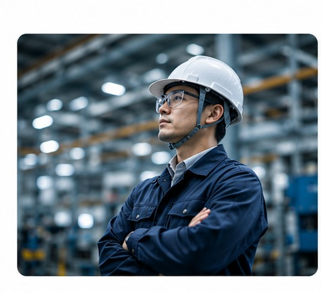

IZUMO SiteBridge
智能系统上线后的运营改善平台
让智能系统在现场真正稳定运行。不止于导入，持续改善运营。

IZUMO SiteBridge 是面向机器人、自动化系统、AI系统等智能现场的运营改善平台。
连接现场客户、远程技术团队与现场工程师，使系统上线后的问题对应、运营改善、长期稳定运行实现可视化、可持续、可管理。
适用场景
需要持续稳定运行和跨团队改善协作的智能现场。
物流机器人
AGV / AMR 的路线、拥堵、站点、调度优化及现场流程改善。
自动化仓储系统
出入库、拣选、搬运与高峰流量时的运行稳定性管理。
工厂自动化系统
设备联动、生产流程、人员操作与现场变化的持续优化。
AI视觉系统
误判、漏检、环境变化和现场操作习惯导致的运营问题分析。
智能搬运系统
搬运路线冲突、等待时间、临时限制区域与搬运能力调整。
OT / IT融合现场
数据中心自动化设备及系统间、厂商间协作的运营现场。
智能系统上线后为什么仍然容易失败
许多项目完成安装、调试、验收后，进入实际现场运营时问题开始显现。
实际业务流程比演示复杂得多
现场存在大量例外流程，与厂商演示的标准流程差距很大，客户难以顺利使用机器人系统。

系统与现场流程不一致
操作习惯和业务流程发生变化后系统未能相应优化，产生绕行、等待、重复输入等低效问题。

故障应对流程不透明
客户不知道问题是否被正确处理，临时对策、责任划分、恢复时间、长期改善方向都不明确。
海外技术团队无法实时了解现场
远程团队可以分析日志，但缺乏现场观察和运营理解，看到系统数据却无法理解现场为何如此运作。
SiteBridge 帮助现场持续稳定运行的方式
SiteBridge 不是传统PM软件，它聚焦于系统导入后的长期运行稳定性。

运营问题生命周期管理
从问题发生到原因分析、临时对策、长期改善、效果确认，形成完整的闭环。
SiteBridge 连接现场现象、运营影响、分析过程与改善成果，让每次问题应对都成为下次稳定运行的资产。
运营问题闭环管理
SiteBridge 工作流程| 阶段 | 内容 |
|---|---|
| 现象记录 | Robot 堵塞 / API 异常 / 操作失误 |
| 现场影响分析 | 是否影响生产与运营 |
| 原因分析 | 网络 / 路线 / 流程 / 调度逻辑 |
| 临时对策 | 区域限制 / 模式切换 |
| 长期改善 | 参数优化 / 流程优化 |
| 效果确认 | 是否真正改善 |
运营状况可视化

客户可实时查看当前系统状态、当前风险、当前故障应对进度与当前运营影响，提供现场"尽在掌握"的安心感。
现场观察与运营分析
不止于日志分析，更关注人员行为、运营变化、高峰流量、路线冲突与操作习惯，真正理解现场为何发生问题。
远程技术团队协作

连接海外开发团队、日本现场、客户运营负责人与IZUMO现场工程师，将问题应对流程透明化与结构化。
持续改善机制
将临时恢复、长期改善、效果确认分开管理，防止同类问题重复发生，避免改善措施停留在口头约定。
SiteBridge 与传统系统的区别
对比维度
| 传统 PM / 工单系统 | SiteBridge |
|---|---|
| 管理任务 | 管理运营问题 |
| 关注项目进度 | 关注长期稳定运行 |
| 记录Bug | 分析现场运营问题 |
| IT视角 | OT现场运营视角 |
| 项目结束即完成 | 验收后持续改善 |
| 软件驱动 | 现场运营驱动 |
IZUMO 的价值
SiteBridge 不仅仅是软件。更重要的是：理解现场的运营改善能力。
IZUMO 将现场工程经验、OT/IT理解力、多厂商协作能力与智能系统现场导入经验相结合，帮助客户让复杂的智能系统在现场真正稳定运行。

面向未来的现场运营平台
随着机器人、AI、自动化、OT/IT融合不断扩大，现场真正需要的远不止系统导入。
真正需要的是：长期稳定运行与持续改善能力。
IZUMO SiteBridge 连接现场、系统与运营，让智能系统真正在现场发挥作用。